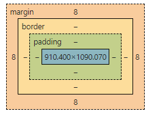

WEB2 - CSS
2022.02, 생활코딩의 WEB2-CSS의 수업 내용을 실습한 내용
현 페이지에는 해당 강의에서 배운 내용을 최대한 활용하였다.
배운 내용
- CSS의 필요와 목적에 대하여
-
단순 HTML의 시작과 함께 만들어진 디자인 관련 태그들이 정보 전달 목적의 HTML 의미를 퇴색시킴.
대신 CSS를 사용한다면 HTML은 정보 전달만을 하도록 유지하되, 'head'태그 안에 'style'태그를 써 CSS를 사용한 디자인 관련 코드를 몰아넣고 전역으로 편리하게 관리, 혹은 기존의 태그에 'style'속성만을 추가.
-
단순 HTML의 시작과 함께 만들어진 디자인 관련 태그들이 정보 전달 목적의 HTML 의미를 퇴색시킴.
- 태그에 속성과 선택자를 부여하는 내용
- 박스 모델
-  주된 내용을 둘러싼 padding - 경계인 border - 여백 margin으로 각각의 박스가 구성되어있음. 크롬의 f12를 눌러 나오는 '개발자 도구'에서 각 박스의 padding과 margin등을 자세히 확인하며 조절하면 편리
- div/span을 사용한 grid 사용(https://caniuse.com/ 에서 얼마나 많은 인구와 웹 브라우저에서 grid를 적용 가능한지 통계 확인 가능)
- 미디어 쿼리(@media 태그)를 사용한 반응형 디자인
- 본 강의에서는 표시 화면 사이즈에 따라(800px) 좌측의 ul태그 내용 배치를 위로 옮기는 정도에 활용
- style.css파일을 별도로 분류하여 css를 사용한 style태그와 관련된 내용을 통합적으로 관리하는 방법
-
각종 코드에서 헤더파일을 로드하듯 'head'태그 내부에 'link'를 활용하여 .css파일을 로드한다.
이러한 별도의 파일 로드로 인한 cost는 개발자 도구-network에서 확인 가능하며, 현 웹 페이지와 그에 따른 css파일을 별도로 웹 서버에서 받아오는 것을 확인 가능하다.
이 구성은 단순히 하나의 웹 페이지를 출력함에 있어선 속도가 느려질 수 있으나, 결과적으로 실사용에선 캐싱을 통해 중복되는 내용을 재다운로드하지 않아 트래픽에서의 이득이 추가로 생긴다. 트래픽의 규모가 커질수록 이 차이는 심해짐
-
각종 코드에서 헤더파일을 로드하듯 'head'태그 내부에 'link'를 활용하여 .css파일을 로드한다.
느낀 점
생활코딩 강의의 주 목적인 '최소한으로 배워서 최대한으로 활용한다'가 정말 잘 적용된다. 기본적인 내용에 충실한 짧은 강의를 통해 배우는 내용으로 해결하고자 하는 목적과 그 내용의 필요성을 명확히 인지시켜 스스로 공부하도록 하는 강의.
덕분에 'WEB1-HTML&Internet'강의만으론 html에서 이미지를 첨부할 때 가운데 정렬하는 방법들을 찾아봐도 잘 이해되지 않았었는데, 불편함을 느끼고 해당 내용을 찾아보고, 이제는 이해하는데 문제가 없었다.
WEB1의 강의론 미흡했던 나름의 화면 구성이 적용되어 만족스럽다... 물론 잘 구성된 웹 페이지에 비해선 태그 사용이나 화면 구성법의 수준이 매우 떨어지지만 웹 디자이너가 목표인 것은 아니니까...
지금은 여러 페이지에서의 기본적인 화면 구성의 통일성을 위해 이 글이 적힌 본문 내용 외에 사이트 메인이나 좌측의 리스트를 .css파일 사용처럼 자동으로 전역 설정할 수 있다면 좋겠다는 생각